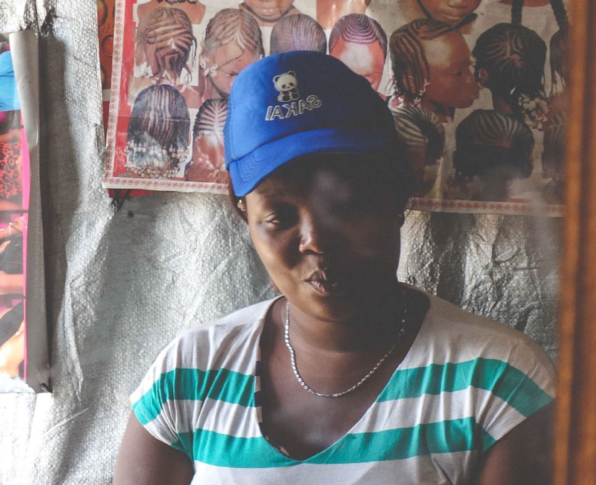
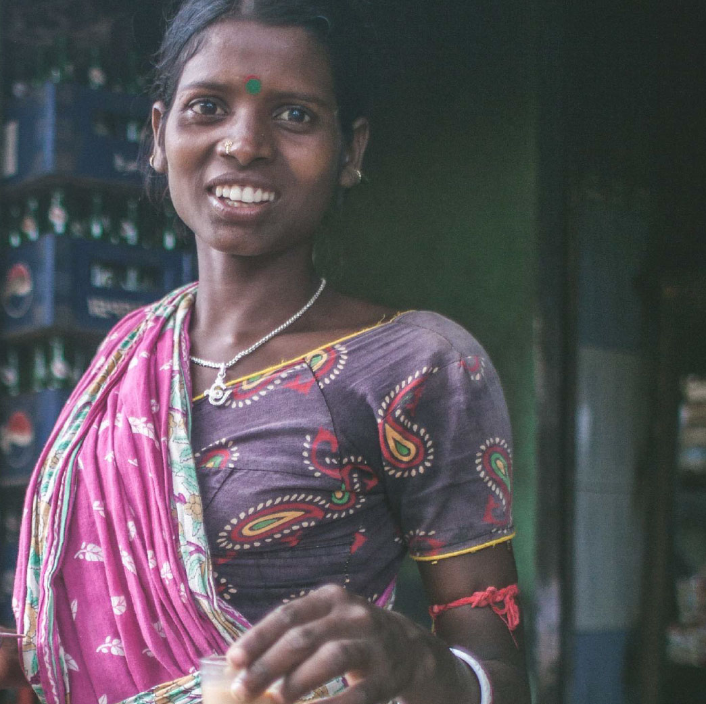

Findings from Research - Macro Social, Community and Familial Trends
Economic realities are transforming ideas about gender roles, relationships and ideal family size. Rising costs and shifting social norms are having a marked effect on perceptions about when and whether to get married, when and how many children to have, and who is involved in such decisions. Increasingly, women play an important role both in and out of the home, with traditionally gendered roles of ‘provider’ and ‘caregiver’ becoming ever more blurred. Mass and social media consumption is increasing and together with education and urbanization constitute a powerful modernizing influence that has helped form a more liberal and progressive younger generation.
In India, while marriage remains the norm, subtle shifts in power dynamics are reflected in delaying marriage and pregnancy to pursue educational and/or professional goals. Earlier, while having more children was a sign of prosperity and stability, women, especially in India, are increasingly seeking to have smaller families. Public health campaigns that discourage marriage before 18 and childbirth before 21 have also driven this shift. Attitudes are shifting towards a more inclusive gender mix. In India, this is reflected in shifting family structures that are being spurred by a more liberal younger generation. There is growing recognition that girls should also be educated. Government schemes are promoting this, which has led to decreased gender bias.
“He wants me to be at home, but I want to work. My money is mine. It feels good to have an income so you don’t have to ask your husband for money.”
Rani, 30, West Bengal
Women now play an important role in both the home and the outside. In Kenya, a large number of women express the need and desire to be self reliant owing to the fast-changing roles of men and women within the community. In India, women also express the need to supplement household income, but are more likely to work in the informal sectors. Most women want better lives, primarily to safeguard the health and welfare of their children. The perception that men are less responsible than in previous generations has reinforced the desire for self-sufficiency amongst Kenyan women. Women raising children on their own without the obligations of marriage is becoming more prevalent. Furthermore, having multiple sex partners - even in marriage - is becoming common.
The economic volatility that most people experience is also leading to the rise of new kinds of plural relationships. Many of these might have a functional or transactional ambit.
“In African culture the man is the head of the
family, but in this generation it’s just a title. It
is the woman who controls everything and
holds it all together.”
Lilly, 26, Nairobi

“When I was younger, the man would be the one
to put food on the table while women took care
of the children. But today, women are everything
- providers and caregivers.” Sophie, 29, Nairobi
Despite increasing empowerment, traditional roles still represent the future for many
women. For many, the pressure to marry and conceive young remains the norm. In
both contexts, women are expected to assure family lineage, and demonstrating the
ability to conceive remains a key responsibility associated with the role of a wife. This
empowerment, therefore, has not led to a change in the norms around fertility and its
understanding, the preservation of which remains sacrosanct for both men and
women.
Marriage and motherhood are the reality for most women in India, irrespective of their
level of education and employment, as the family has to be their first priority. Despite
some young empowered girls going against the grain to delay marriage, the pressure
to settle down persists even for them. For many Indian women, (re)entering the
workforce is only possible when children are of school age or grown, and women's
negotiating power within the family increases as they - and their children grow older.
The need to demonstrate one’s fertility immediately after marriage was called out as
important by women in both India and Kenya. Moreover, in Kenya, the need to remain
fertile continued even in the later years of a woman’s life, in case she is remarried or
her husband desires more children. In Kenya, many men desire large families and
equate their having many children as a sign of masculinity. In India, this perception is
steadily shifting given the multiple government programs aimed at promoting smaller
families.
“You get married to have children. If you aren’t
fertile, your husband will find another wife.”
Sheila, 25, Nakuru

“I wanted to at least finish school but I had
to drop out in 10th, once my marriage got
fixed. Now my only dream is to give my kids
the opportunities I didn’t have.”
Lata, 21, Delhi
Next - Role of Influencers
 insights
insights